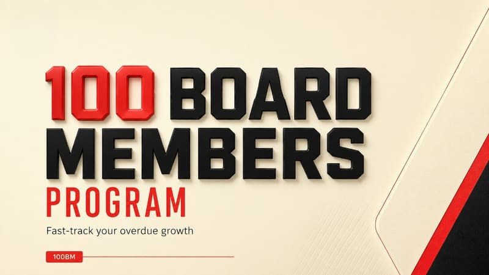

Leadership Essentials
- 4 weeks
- 2 live days + weekly sessions
Here's what happened with your learning system
Continue learning
Next: Section 4 · Negotiating from strength
2programmes
In progress
1programme
Completed
6lessons
Done this week
1earned
Certificates
Badges earned
Leaderboard
